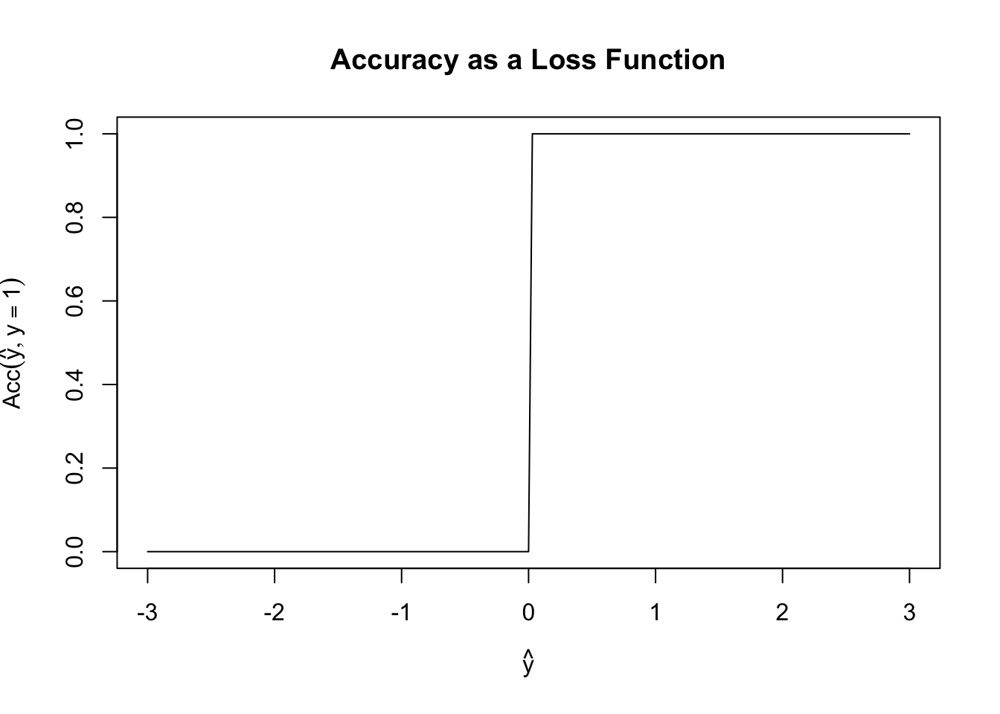
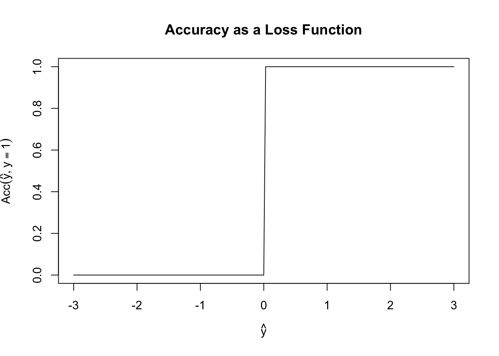
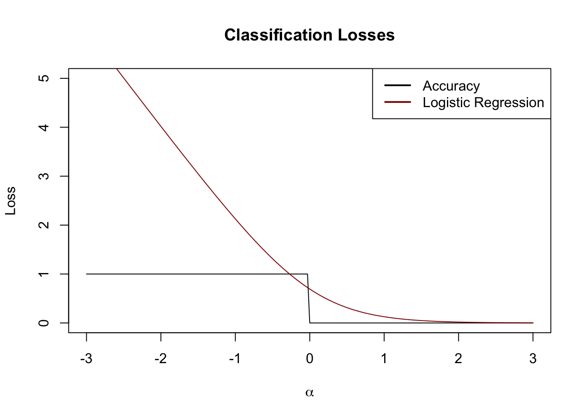
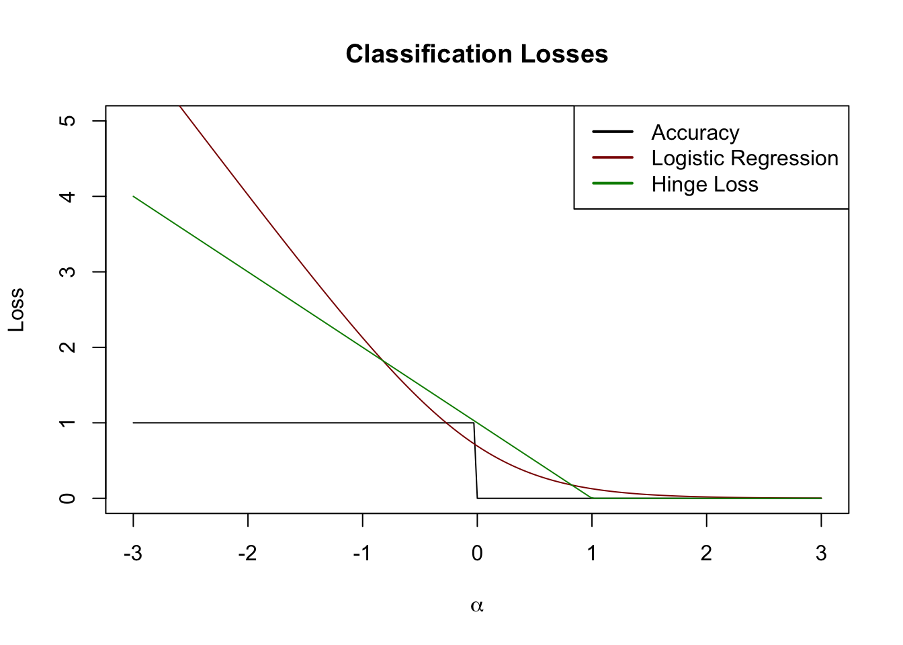

y_hat <- seq(-3, 3, length.out=201)
acc <- function(y_hat, y=1) sign(y_hat) == sign(y)
plot(y_hat, acc(y_hat), type="l",
xlab=expression(hat(y)),
ylab=expression(Acc(hat(y), y==1)),
main="Accuracy as a Loss Function")
Michael Weylandt
\[\newcommand{\bX}{\mathbf{X}}\newcommand{\bx}{\mathbf{x}}\newcommand{\bbeta}{\mathbf{\beta}} \newcommand{\P}{\mathbb{P}}\newcommand{\R}{\mathbb{R}} \newcommand{\by}{\mathbf{y}}\newcommand{\argmax}{\text{arg\,max}}\newcommand{\argmin}{\text{arg\,min}}\]
This week we begin to examin discriminative classifiers. Unlike generative classifiers, which attempt to model \(\bx\) as a function of \(y\) and then use Bayes’ rule to invert that model, discriminative classifiers take the more standard approach of directly modeling \(y\) as a function of \(\bx\). This is the approach you have already seen in our various variants of OLS.
As we saw in our regression unit, we can pose many interesting estimators as loss minimization problems. For least squares, we primarily focused on mean squared error (MSE) as a loss function, though we also briefly touched on MAE, MAPE, and ‘check’ losses. There is not a single ‘canonical’ loss for the classification setting and different choices of loss will yield different classifiers.
Before we build our actual first loss, it is worth asking why we can’t use something like classification accuracy as our loss function. Specifically, define \[\text{Acc}(y, \hat{y}) = \begin{cases} 1 & y = \text{sign}(\hat{y}) \\ 0 & y \neq \text{sign}(\hat{y}) \end{cases}\] Here we consider the case where \(\hat{y}\) may be real-valued as a (slight) generalization of probabilistic classification and we use the \(\pm 1\) convention for the two classes.
Fixing \(y = 1\), \(\text{Acc}\) has the following shape:
y_hat <- seq(-3, 3, length.out=201)
acc <- function(y_hat, y=1) sign(y_hat) == sign(y)
plot(y_hat, acc(y_hat), type="l",
xlab=expression(hat(y)),
ylab=expression(Acc(hat(y), y==1)),
main="Accuracy as a Loss Function")
This is a terrible loss function! It is both non-convex (can you see why?) and just generally unhelpful. Because it is flat almost everywhere, we have no access to gradient information (useful for fitting) or to any sense of ‘sensitivity’ to our loss. In this scenario, if \(y=1\), both \(\hat{y}=0.00001\) and \(\hat{y}=0.9999\) have the same accuracy even though the latter is a more ‘confident’ prediction.
So if not accuracy, where else might we get a good loss function? You might first ask if we an use OLS? It works perfectly well for regression and we know it is well-behaved, so what happens if we try it for classification? The answer is … complicated.
OLS as a loss function for classification is a bit strange, but it turns out to be more-or-less fine. In particular, OLS can be used to evaluate probabilistic classifiers, where it is known as the Brier score. OLS as a predictor can be a bit more problematic: in particular, if we just predict with \(\P(y=1) = \bx^{\top}\bbeta\), we have to deal with the fact that \(\hat{y}\) can be far outside a \([0, 1]\) range we might want from a probabilistic classifier. In certain limited circumstances, we can assume away this problem (perhaps by putting specific bounds on \(\bx\)), but these fixes are fragile. Alternatively, we can try to ‘patch’ this approach and use a classifier like
\[\P(y=1) = \begin{cases} 1 & \bx^{\top}\bbeta > 1 \\ 0 & \bx^{\top}\bbeta < 0 \\ \bx^{\top}{\bbeta} & \text{ otherwise}\end{cases}\]
Even if this feels a bit unsophisticated, Ttis is not awful, but it still struggles from the ‘long flat region’ problems that accuracy encounters.
At this point, it’s hopefully clear that it will be a bit hard to ‘hack together’ a suitable loss and that we might benefit from approaching the problem with more theoretical grounding.
While we argued that OLS is well-grounded in MSE alone, we can recall it has additional connections to the Gaussian. These “Gaussian vibes” were not essential to making OLS work, but they were useful in deriving OLS as a sensible procedure. Can we do something similar for classification? That is, can we assume a ‘working model’ to come up with a good loss function and then use it, even if we doubt that the model is ‘correct’?
As with all leading questions, the answer is of course a resounding yes. We start from the rather banal observation that \(y\) must have a Bernoulli distribution conditional on \(\bx\). After all, the Bernoulli is (essentially) the only \(\{0, 1\}\) distribution we have to work with. So we really just need a way to model the \(p\) parameter of a Bernoulli as a function of \(\bx\). Because we love linear models, we may choose to set \(p = \bx^{\top}\bbeta\), but this gets us back to the range problem we had above.
Specifically, we require the Bernoulli parameter to take values in \([0, 1]\) but our linear predictor \(\bx^{\top}\bbeta\) takes values in all of \(\R\). We can fix this with a simple ‘hack’: we need a function that ‘connects’ \(\R\) to \([0, 1]\). If we call this function \(\mu\), we then can specify our whole model as \[y | \bx \sim \text{Bernoulli}(\mu(\bx^{\top}\bbeta))\] and reduce our problem to estimating \(\bbeta\). Where can we get such a function?
The most common choice is \[\mu(z) = \frac{e^z}{1+e^z} = \frac{1}{1+e^{-z}}\], which is known as the logistic or sigmoid function due to its ‘s-like’ shape:
More generally, we can use essentially the CDF of any random variable supported on the real line as a choice of \(\mu\): since CDFs map the support onto the \([0, 1]\) range they are perfect for this choice. Unfortunately, most CDFs are a bit unwieldy so this approach, while theoretically satisfying, is not too widely used in practice. If you see it, the most common choice is \(\mu(z) = \Phi(z)\), the normal CDF, resulting in a method known as “probit” regression (after ‘probability integral transform,’ an old-fashioned name for the CDF) or \[\mu(z) = \frac{\tan^{-1}(z)}{\pi} + \frac{1}{2}\] which gives a method known as “cauchit” regression, since this is the CDF of the standard Cauchy distribution. These choices are far less common than the default sigmoid we used above. Generally, they are only slightly different in practice and far more computationally burdensome and just aren’t really worth it.
Returning to our default sigmoid, we now have the model \[ y | \bx \sim \text{Bernoulli}\left(\frac{1}{1+e^{-\bx^{\top}\bbeta}}\right)\] This model is well-posed (in the sense that the distribution ‘fits’ the data and we are guaranteed never to put invalid parameters in) but we don’t yet have a way to use it as a loss function.
We can build a loss-function by relying on the maximum likelihood principle. The maximum likelihood principle is a core idea of statistics - and one you will explore in much greater detail in other courses - but, in essence, it posits that we should use the (negative) PMF or PDF as our loss function. Specifically, the ML principle says that, if many models could fit our data, we should pick the one that makes our data most probable (as determined by the PMF/PDF).
Before we work out the ML estimator (MLE) for our classification model, let’s take a brief detour and look at the MLE for (Gaussian) regression. Specifically, if we assume a model \[y \sim \mathcal{N}(\bx^{\top}\bbeta, \sigma^2)\] for known \[\sigma^2\], the PDF of the training point \((\bx_1, y_1)\) is
\[p(y_1 | \bx_1) = \frac{1}{\sqrt{2\pi\sigma^2}}\exp\left\{-\frac{\|y_1 - \bx_1^{\top}\bbeta\|_2^2}{2\sigma^2}\right\}\]
If we have a set of \(n\) IID training data points, the joint PDF can be obtained by multiplying together PDFs (IID is great!) to get
\[\begin{align*} p(\mathcal{D}_{\text{train}}) &= \prod_{i=1}^n p(y_i | \bx_i) \\ &= \prod_{i=1}^n \frac{1}{\sqrt{2\pi\sigma^2}}\exp\left\{-\frac{\|y_i - \bx_i^{\top}\bbeta\|_2^2}{2\sigma^2}\right\} \\ &= (2\pi\sigma^2)^{-n/2}\exp\left\{-\frac{1}{2\sigma^2}\sum_{i=1}^n \|y_i - \bx_i^{\top}\bbeta\|_2^2\right\} \\ &= (2\pi\sigma^2)^{-n/2}\exp\left\{-\frac{1}{2\sigma^2} \|\by - \bX\bbeta\|_2^2\right\} \\ \end{align*}\]
We could maximize this, but a few minor tweaks make the problem much easier:
\[\begin{align*} \hat{\bbeta} &= \argmax_{\bbeta} p(\mathcal{D}_{\text{train}}) \\ &= \argmax_{\bbeta} \log p(\mathcal{D}_{\text{train}}) \\ &= \argmax_{\bbeta} \log\left( (2\pi\sigma^2)^{-n/2}\exp\left\{-\frac{1}{2\sigma^2}\sum_{i=1}^n \|\by - \bX\bbeta\|_2^2\right\}\right) \\ &= \argmax_{\bbeta} -\frac{n}{2}\log(2\pi\sigma^2) -\frac{1}{2\sigma^2} \|\by - \bX\bbeta\|_2^2 \\ &= \argmin_{\bbeta} \frac{n}{2}\log(2\pi\sigma^2) + \frac{1}{2\sigma^2} \|\by - \bX\bbeta\|_2^2 \\ &= \argmin_{\bbeta} \frac{1}{2}\|\by - \bX\bbeta\|_2^2 \end{align*}\]
Why were we able to do the simplifications in the last line? (You might also recognize the penultimate line as a term used in the AIC of a linear model.)
This is quite cool! If we assume \(\by\) follows a particular Gaussian, we get OLS by applying the general MLE approach. Deeper statistical theory tells us that the MLE is (essentially) optimal, so if our data is not too ‘un-Gaussian’ it makes sense that the Gaussian MLE (OLS) will perform reasonably well. Since many things in this world are Gaussian-ish, OLS is optimal-ish for a large class of interesting problems.
Returning to our classification problem, we see that if our training data is IID, the MLE can be obtained by minimizing the negative sum of the log PDFs. For space, we often start from this point instead of doing the full set of manipulations from scratch.
So what is the Bernoulli log PMF? Recall that if \(B \sim \text{Bernoulli}(p)\), its PMF is given by:
\[\P(B=k) = \begin{cases} p & k=1 \\ 1-p & k = 0 \end{cases}\]
or more compactly,
\[\P(B = k) = p^k(1-p)^(1-k)\]
Taking logarithms, we have
\[\log \P(B = k) = k \log p + (1-k) \log(1-p)\]
and hence the negative log-likelihood:
\[-\log \P(B = k) = -k \log p -(1-k) \log(1-p)\]
From our working model, we take \(p = 1/(1+e^{-\bx^{\top}\bbeta})\) so our joint MLE is given by:
\[\hat{\bbeta} = \argmin_{\bbeta} \sum_{i=1}^n -y_i \log\left(1/(1+e^{-\bx_i^{\top}\bbeta})\right) - (1-y_i)\log\left(1 - 1/(1+e^{-\bx_i^{\top}\bbeta})\right)\]
This is still quite hairy, so let’s simplify it. In the first term, we note that \(-\log(1/x) = \log x\) to get:
\[\hat{\bbeta} = \argmin_{\bbeta} \sum_{i=1}^n y_i \log\left(1+e^{-\bx_i^{\top}\bbeta}\right) - (1-y_i)\log\left(1 - 1/(1+e^{-\bx_i^{\top}\bbeta})\right)\]
For the second term, note that
\[1-\frac{1}{1+e^{-z}} = \frac{1+e^{-z} - 1}{1+e^{-z}} = \frac{e^{-z}}{1+e^{-z}} \implies \log\left(1-\frac{1}{1+e^{-z}}\right) = -z - \log(1 + e^{-z})\]
so we get:
\[\begin{align*} \hat{\bbeta} &= \argmin_{\bbeta} \sum_{i=1}^n y_i \log\left(1+e^{-\bx_i^{\top}\bbeta}\right) - (1-y_i)\log\left(1 - 1/(1+e^{-\bx_i^{\top}\bbeta})\right) \\ &= \argmin_{\bbeta} \sum_{i=1}^n y_i \log\left(1+e^{-\bx_i^{\top}\bbeta}\right) - (1-y_i)\left[-\bx_i^{\top}\bbeta + \log\left(1+e^{-\bx_i^{\top}\bbeta}\right)\right] \\ &= \argmin_{\bbeta} \sum_{i=1}^n y_i \log\left(1+e^{-\bx_i^{\top}\bbeta}\right) + (1-y_i)\left[\bx_i^{\top}\bbeta + \log\left(1+e^{-\bx_i^{\top}\bbeta}\right)\right] \\ &= \argmin_{\bbeta} \sum_{i=1}^n y_i \log\left(1+e^{-\bx_i^{\top}\bbeta}\right) + \left[\bx_i^{\top}\bbeta + \log\left(1+e^{-\bx_i^{\top}\bbeta}\right)\right] -y_i\left[\bx_i^{\top}\bbeta + \log\left(1+e^{-\bx_i^{\top}\bbeta}\right)\right]\\ &= \argmin_{\bbeta} \sum_{i=1}^n-y_i \bx_i^{\top}\bbeta + \bx_i^{\top}\bbeta + \log\left(1-e^{-\bx_i^{\top}\bbeta}\right) \end{align*}\]
We could work in this form, but it turns out to actually be a bit nicer to ‘invert’ some of the work we did above to get rid of a term. In particular, note
\[z + \log(1-e^{-z}) = \log(e^z) + \log(1-e^{-z}) = \log(e^z + e^{z-z}) = \log(1 + e^z)\]
which gives us:
\[\hat{\bbeta} = \argmin_{\bbeta} \sum_{i=1}^n-y_i \bx_i^{\top}\bbeta + \log\left(1+e^{\bx_i^{\top}\bbeta}\right)\]
Wow! Long derivation. And we still can’t actually solve this!
Unlike OLS, where we could obtain a closed-form solution, we have to use an iterative algorithm here. While we could use gradient descent, we can get to an answer far more rapidly if we use more advanced approaches. Since this is not an optimization course, we’ll instead use some software to solve for us:
# Generate data from the logistic model
n <- 500
p <- 5
X <- matrix(rnorm(n * p), ncol=p)
beta <- c(1, 2, 3, 0, 0)
P <- 1/(1+exp(-X %*% beta))
y <- rbinom(n, size=1, prob=P)
# Use optimization software
# See https://cvxr.rbind.io/cvxr_examples/cvxr_logistic-regression/ for details
library(CVXR)
Attaching package: 'CVXR'The following object is masked from 'package:dplyr':
idThe following object is masked from 'package:purrr':
is_vectorThe following object is masked from 'package:stats':
power| beta_hat |
|---|
| 0.9975707 |
| 1.6927524 |
| 2.8273155 |
| 0.0471099 |
| 0.1771164 |
Not too bad, if we compare this to R’s built-in logistic regression function, we see our results basically match:
Call:
glm(formula = y ~ X + 0, family = binomial)
Coefficients:
Estimate Std. Error z value Pr(>|z|)
X1 0.99757 0.16318 6.113 9.76e-10 ***
X2 1.69275 0.19420 8.716 < 2e-16 ***
X3 2.82732 0.27231 10.383 < 2e-16 ***
X4 0.04711 0.13997 0.337 0.736
X5 0.17712 0.12503 1.417 0.157
---
Signif. codes: 0 '***' 0.001 '**' 0.01 '*' 0.05 '.' 0.1 ' ' 1
(Dispersion parameter for binomial family taken to be 1)
Null deviance: 693.15 on 500 degrees of freedom
Residual deviance: 332.85 on 495 degrees of freedom
AIC: 342.85
Number of Fisher Scoring iterations: 6Good match!
Note that, in the above, we had to use the logistic function built into CVX. If we used log(1+exp(eta)), the solver would not be able to prove that it is convex and would refuse to try to solve. See the CVX documentation for more details.
We can compute accuracy after defining a ‘decision rule’. Here, let’s just round the predicted probability
Now that we have this toolkit built up, we can also easily apply ridge and lasso penalization:
| 0.6323610 |
| 1.1913097 |
| 2.0446974 |
| 0.0000000 |
| 0.0375919 |
We got some sparsity, as we would expect with \(\ell_1\) penalization.
The approach we took here is a special case of a generalized linear model: generalized linear models (GLMs) consist of three parts:
The adaptor function needs to be smooth (for nice optimization properties) and monotonic (or else the interpretation gets too weird), but we otherwise have some flexibility. As noted above, if we pick \(\mu\) to be the normal or Cauchy CDFs, we get alternative ‘Bernoulli Regressions’ (probit and cauchit).
We can generalize the model for \(\eta\) by allowing it to be an additive (spline) model or a kernel method. To fit splines, you can use the gam function from the mgcv function.
Finally, we also have choices in the sampling distribution. While normal and Bernoulli are the most common, you will also sometimes see Poisson and Gamma in the wild. For both of these, the mean is a positive value, so we require an adaptor that maps \(\R\) to \(\R \geq 0\) and we typically take \(\mu(z) = e^z\).
A good exercise is to repeat the above analysis for Poisson regression and compare your result (obtained with CVXR) to the Poisson regression built into R.
We now have a workable loss function for discriminative classification. Returning to our example from above (changed to \(\{0, 1\}\) convention briefly). Let us set \(\alpha = y\hat{y}\) and investigate our loss functions as a property of \(\alpha\):
alpha <- seq(-3, 3, length.out=201)
acc <- function(alpha) ifelse(alpha < 0, 1, 0)
lr_loss <- function(alpha) log(1 + exp(-2*alpha))
plot(alpha, acc(alpha), type="l",
xlab=expression(alpha),
ylab="Loss",
main="Classification Losses",
ylim=c(0, 5))
lines(alpha, lr_loss(alpha), col="red4")
legend("topright",
col=c("black", "red4"),
lwd=2,
legend=c("Accuracy", "Logistic Regression"))
We see here that the logistic loss defines a convex surrogate of the underlying accuracy. Just like we used \(\ell_1\) as a tractable approximation for best squares, logistic regression can be considered a tractable approximation for accuracy minimization.2
Other useful loss functions can be created using this perspective, perhaps none less important than the hinge loss, which gives rise to a classifier known as the support vector machine (SVM).
In this section, we go back to \(\{\pm 1\}\) convention.
Instead of using a logistic loss, consider a hinge loss of the form
\[H(y, \hat{y}) = (1 - y\hat{y})_+\]
When \(y = \hat{y}=1\) or \(y = \hat{y} = 0\), this is clearly 0 as we would expect from a good loss. What happens for cases where our prediction is wrong or not ‘full force’, say \(\hat{y} = 1/2\).
Looking ahead, we will use a linear combination of features to create \(\hat{y} = \bx^{\top}\bbeta\) yielding:
\[H(\bbeta) = (1 - y \bx^{\top}\bbeta)_+\]
If \(y=1\), we get zero loss so long as \(\bx^{\top}\bbeta > 1\) and a small loss for \(0 < \bx^{\top}\bbeta < 1\). As \(\bx^{\top}\bbeta\) crosses zero and goes negative, the loss grows linearly without bound. (Reverse all of this for the case \(y = -1\).) This is an interesting loss function: we cannot make our loss decrease as our predictions become ‘more right’, but our loss continues to increase as our prediction becomes ‘more wrong’.
Visually, we can draw this on our plot from above:
alpha <- seq(-3, 3, length.out=201)
acc <- function(alpha) ifelse(alpha < 0, 1, 0)
lr_loss <- function(alpha) log(1 + exp(-2*alpha))
hinge_loss <- function(alpha) pmax(0, 1-alpha)
plot(alpha, acc(alpha), type="l",
xlab=expression(alpha),
ylab="Loss",
main="Classification Losses",
ylim=c(0, 5))
lines(alpha, lr_loss(alpha), col="red4")
lines(alpha, hinge_loss(alpha), col="green4")
legend("topright",
col=c("black", "red4", "green4"),
lwd=2,
legend=c("Accuracy", "Logistic Regression", "Hinge Loss"))
This is also a pretty nice surrogate loss. In this case, let’s just go ‘straight at it’ to construct a classifier:
\[\hat{\bbeta} = \argmin \sum_{i=1}^n (1-y_i \bx_i^{\top}\bbeta)_+\]
This classifier is not uniquely defined for many problems (because of the long flat part of the loss), so it is conventional to add a regularization term to the SVM:
\[\hat{\bbeta} = \argmin \sum_{i=1}^n (1-y_i \bx_i^{\top}\bbeta)_+ + \lambda \|\bbeta\|_2^2\]
We can solve this directly using CVX as follows:
# Generate data from the logistic model and fit an SVM
n <- 500
p <- 5
X <- matrix(rnorm(n * p), ncol=p)
beta <- c(1, 2, 3, 0, 0)
P <- 1/(1+exp(-X %*% beta))
y <- rbinom(n, size=1, prob=P)
## Convert to +/-1 convention
y <- 2 * y - 1
library(CVXR)
beta <- Variable(p)
eta <- X %*% beta
objective <- sum(pos(1 - y * eta)) + 0.5 * norm2(beta)^2
problem <- Problem(Minimize(objective))
beta_hat <- solve(problem)$getValue(beta)Using the decision rule \(\hat{y} = \text{sign}(\bx^{\top}\bbeta)\), this gives us good accuracy:
This is comparable to what we got for logistic regression even though:
So, all in all, pretty impressive.
SVMs are a remarkably powerful and general classification technology. Before we move past them, we will now take a second perspective focusing on the geometry of SVMs.
For historical reasons, this is known as the inverse link, but I prefer to simply think of it as an adaptor and to never use the (forward) link.↩︎
This ‘surrogate loss’ perspective was first discussed in: P.L. Barlett, M.I. Jordan, and J.D. McAuliffe. “Convexity, Classification, and Risk Bounds”. Journal of the American Statistical Association 101(473), pp.138-156. 2006. DOI:10.1198/016214505000000907↩︎